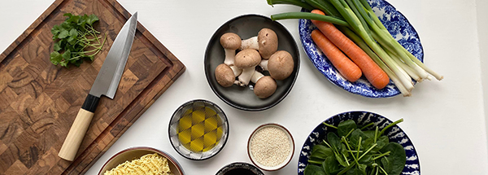

OM OS
Nippon startede som en lille ide i 2023 hos en gruppe studerende, som så et hul i markedet. De mange forskellige slags måltidskasser sprang frem, men behovet for noget helt unikt og specielt manglede stadig. Med fokus på bæredygtighed og økologi bragede Nippon hurtigt frem. Moderniteten og eksklusiviteten dragede folk til sig, og med de mange forskellige smagsoplevelser blev Nippon et hurtigt voksende brand.